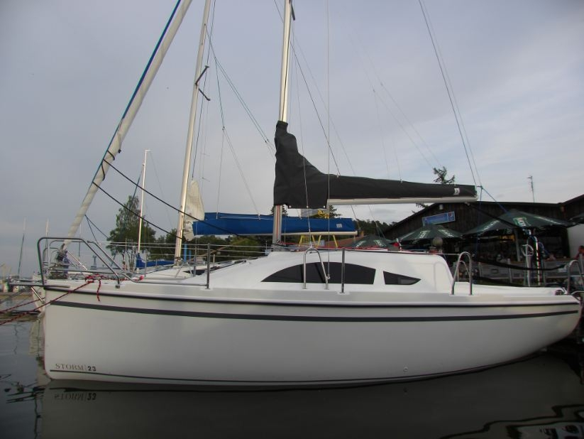

feature
Background:
Ray was born on December 7th, 1996 in Concord, Ohio. For his whole life Ray was raised in Chardon and went to all three schools there from K-12. In 2015 Ray graduated from Chardon HIgh School and in the fall of that year, he enrolled at The University of Akron.
Free Time:
-
Sports/Outdoor Activities
- Soccer
- Basketball
- Sailing
- Rock Climbing
- Swimming
- Skiing
- SkateBoarding
-
Indoor Activities/Hobbies
- Reading
-
Music
- Ukulele
- Guitar
- Drums
- Video Games
Recommended Places to Visit
- Hawaii - Weather and scenery is very beautiful. The sun is always shining and there is plenty to do on the Hawaiian Islands.
- Washington - Even though it may seem gray and gloomy all the time, Washington has many different climates you can explore. From the top of Mount Rainier to the sandy shores of Ruby Beach, there is adventure around each corner.
- Lake Chautauqua - Chautauqa is where my grandparents live and their house is right on the lake. The lake is home to many communities and buisnesses. Going for a sail here is always relaxing.
- Clearwater Beach - Clearwater, FL is known for their sunny days. Here you can sunbathe almost year round with their average sunny days being 240 days of the year.
- Chicago - A city of music and preformence. You will not be bored here as there shows around every corner and many establishments to visit.